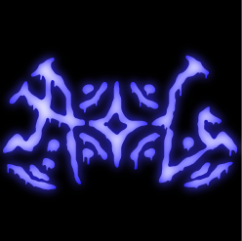

Age of Conquest (AOC)
Article
View Source
Read
From AOCpedia, the free encyclopedia
This article is about Age of Conquest. For the article on retards, see here. For other uses, see.
Not to be confused with Age of Consent.
Not to be confused with Age of Consent.

Logo used since 2025. Created by Jacksson.
Discord: Invite Link
Active Through: 2022-Present
Notable Members: Jacksson, Bitzer, Dankesch0n, AtCristi, Jules, Deserted, Marco, Naple, Spagoot, Nkgui, Servzni, Maxus
Important Games: Pixelplace.io, Minecraft, Cry of Fear, Politics and War
Active Through: 2022-Present
Notable Members: Jacksson, Bitzer, Dankesch0n, AtCristi, Jules, Deserted, Marco, Naple, Spagoot, Nkgui, Servzni, Maxus
Important Games: Pixelplace.io, Minecraft, Cry of Fear, Politics and War
Age of Conquest (abbreviated by and known officially as AOC)
is a growing community on Discord run by Cristi (seized power
August 2024 - present.) First established in mid-February of
2023, it has suffered through a series of separations and
successions that have created a political division among its
population.
Today, the people of AOC are decently united despite its rough history. Drawing its origins from the small .IO game entitled Pixelplace, AOC has conquered more leisurely mediums, one of which being Minecraft. AOC has been notably suffering through an immigration crisis of Yggdrasil's people in recent months, creating a diversity never seen before in the community and sparking lots of nativism in older members. It is ranked one of the most xenophobic communities on Discord by various sources, and is known to be drastically high in hate speech levels (particularly among Northern AOC members.)
Today, the people of AOC are decently united despite its rough history. Drawing its origins from the small .IO game entitled Pixelplace, AOC has conquered more leisurely mediums, one of which being Minecraft. AOC has been notably suffering through an immigration crisis of Yggdrasil's people in recent months, creating a diversity never seen before in the community and sparking lots of nativism in older members. It is ranked one of the most xenophobic communities on Discord by various sources, and is known to be drastically high in hate speech levels (particularly among Northern AOC members.)
History
Drew Durnil, 1984 map, and early AOC influence - December 2022 -
January 2023
A lot of these canvases have been destroyed, and links to archives of them have been lost forever.
Prior to the creation of AOC, many founding members (including Jack f.k.a. Tiuihyyf, Danke, Cristi f.k.a. Ilikemen, and Deserted f.k.a. Ez1on) commonly interacted on the Pixelplace canvas Drew Durnil Discord Map. After months of suffering through problems such as griefing and dotting (which were fairly common on public canvases in which anyone could draw,) the creation of a private and moderated canvas was proposed.
Picture on the left is a screenshot of the 1984 map canvas, taken by Danke. In January 2023, PxP user James created the canvas 1984 map and advertised it to various hotspots on the game, including the Drew Durnil canvas. Attracting Danke, Ilikemen (Cristi), and Tiuihyyf (Jackson) later on, this canvas is ultimately agreed to be the first predecessor of AOC. This canvas also had contributions from AOC founder Naple, and other recurring individuals such as Dubya and Maxus201. The canvas had significant player engagement, and lasted for a good two weeks. Picture on the right is a screenshot of the first season of A New World Age, also taken by Danke.
After Naple and James destroyed the canvas, James’s funding sport Agrapefruit succeeded the 1984 map canvas with A New World Age, attracting almost the same demographic and barely lasting for 3 seasons. At this point, patterns of alliances and rivalries were beginning to emerge and make themself quite repetitive. This would set the basis of the users’ relations during the first couple of AOC canvases.
Picture on the left, Age of Empires, taken by Danke. After ANWA, Maxus201 would follow with the last AOC predecessor, Age of Empires, in the very early February of 2023. It lasted for a couple weeks, before it was abandoned after Maxus abused mod tools, supposedly in a fit of rage after losing a war. People from there, which included some new members, started a rebellion with Naple, resulting in the creation of the very first canvas under Age of Conquest.
Prior to the creation of AOC, many founding members (including Jack f.k.a. Tiuihyyf, Danke, Cristi f.k.a. Ilikemen, and Deserted f.k.a. Ez1on) commonly interacted on the Pixelplace canvas Drew Durnil Discord Map. After months of suffering through problems such as griefing and dotting (which were fairly common on public canvases in which anyone could draw,) the creation of a private and moderated canvas was proposed.
Picture on the left is a screenshot of the 1984 map canvas, taken by Danke. In January 2023, PxP user James created the canvas 1984 map and advertised it to various hotspots on the game, including the Drew Durnil canvas. Attracting Danke, Ilikemen (Cristi), and Tiuihyyf (Jackson) later on, this canvas is ultimately agreed to be the first predecessor of AOC. This canvas also had contributions from AOC founder Naple, and other recurring individuals such as Dubya and Maxus201. The canvas had significant player engagement, and lasted for a good two weeks. Picture on the right is a screenshot of the first season of A New World Age, also taken by Danke.
After Naple and James destroyed the canvas, James’s funding sport Agrapefruit succeeded the 1984 map canvas with A New World Age, attracting almost the same demographic and barely lasting for 3 seasons. At this point, patterns of alliances and rivalries were beginning to emerge and make themself quite repetitive. This would set the basis of the users’ relations during the first couple of AOC canvases.
Picture on the left, Age of Empires, taken by Danke. After ANWA, Maxus201 would follow with the last AOC predecessor, Age of Empires, in the very early February of 2023. It lasted for a couple weeks, before it was abandoned after Maxus abused mod tools, supposedly in a fit of rage after losing a war. People from there, which included some new members, started a rebellion with Naple, resulting in the creation of the very first canvas under Age of Conquest.